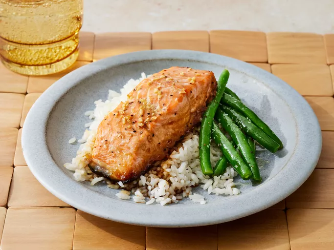

Maple Salmon

Description
A delicious restuarant worthy salmon dish fit for all seafood lovers alike
Ingredience
- 1/4 cup of maple syrup
- 2 tablespoons of soysauce
- 1 cloved garlic, minced
- 1/4 teaspoon of garlic salt
- 1/8 teaspoon of ground black pepper
- 1 pound of salmon
Steps
- Stir maple syrup, soy sauce, garlic, garlic salt, and pepper together in a small bowl
- Cut salmon into 4 equal-sized fillets. Place in a shallow glass baking dish and coat with maple syrup mixture. Cover the dish and marinate the salmon in the refrigerator for 30 minutes, turning once halfway
- Preheat oven to 400 F
- Place the baking dish in the preheated oven and bake salmon uncovered until flesh easily flakes with a fork, about 20 minutes
- Enjoy!
Home